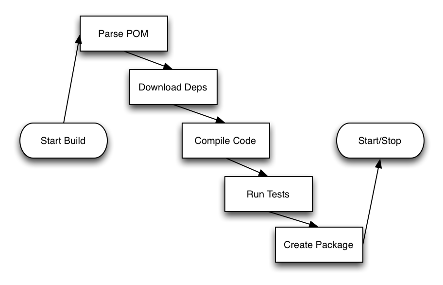

Introduction to Maven
Building, Testing, and Assembling Applications
Created by Jason van Zyl / @jvanzyl
Welcome
Welcome to Introduction to Maven. In this class you will learn how to use Maven to build your projects.
Goals and Objectives
At the end of this class, you should know how to:
- Download and install Maven
- Run a simple build
- Configure and locate dependencies
Goals and Objectives
At the end of this class, you should know how to:
- Configure Unit Testing Plugins
- Customize Build Output and Packages
- Understand the Basics of Build Customization
- Understand Multimodule Builds
Prerequisites
Here are a few prerequisites we've assumed...
You are Comfortable with the OS
You should know how to:
- Download a file to your workstation
- Set an Environment Variable
- Run shell and batch scripts
You Understand Java Development
We assume that you:
- Know how to install Java.
- Understand the structure of simple programs.
- Have had experience compiling Java code.
Target Technologies
We've developed this class to address a set of technologies.
Operating Systems
This class targets:
Windows 7 or Higher
OSX Mountain Lion
You can also use Linux, (but you do so at your own risk.)
Java Version
This class is based on Java 7.
Can you use Java 6? Use at your own risk.
Note: Examples may not work.
IDE
The examples in this class will feature Eclipse Kepler.
But, you can use IntelliJ or NetBeans if that is what you are familiar with.
Again, use an alternative IDE at your own risk.
Instructor Intro
Who's teaching this class?
Planned Class Structure
In this class we are going to:
- Learn by Doing
- Talk "Theory" only as-needed
- Emphasize Demos over Talk
Please Interrupt Me
If you have a question, please interrupt me.
- Ask away.
- We've built in time for questions.
- Questions help tailor content to specific concerns.
Note: Instructors available after class.
Building a Simple Project
First Steps
Created by Jason van Zyl / @jvanzyl
Module Objectives
- Introduce an Example Project
- Examine the pom.xml
- Explain directory structure
- Introduce coordinates
- Introduce dependencies
Do First, Learn Later
Our training philsophy is straightforward...
We learn from experience, not from watching slides.
Let's get to work.
First Example: Copy
Introducing a Simple Example:
$ cp examples/simple-project working
First Example: Purpose
This example is a single-module Maven build.
A command-line application which:
- Demonstrates using Maven
- Builds a self-executable JAR
- A non-trivial POM example
First Example: Student Lookup
A University has a Registrar to check student status.
- Registrar fires up a CLI application.
- Enters in a Student's ID Number
- Student is Full Time if Credits > 12
Building the Project
Let's build this project...
$ mvn clean install
Note: This should take about a minute to complete.
What Just Happened?
The Maven build...
- ...inspected a file called the Project Object Model (POM)
- ...downloaded dependencies.
- ...compiled Java code into bytecode.
- ...ran a series of Unit Tests.
- ...assembled everything into a JAR file.
What Just Happened?
Running the Project
After the build, we have the following:
simple-project-1.0-SNAPSHOT.jarintarget/- A number of JARs in target/
Run the example application like this:
$ cd target $ java -jar simple-project-1.0-SNAPSHOT.jar
Build Output
For later...
target/contains build output- Build configured the Jar Manifest
- Build copied dependencies to
target/ - Output == An Executable Jar
What is a Maven Project?
A Maven project is...
- A collection of files and folders.
- With a pom.xml file.
What's in a POM?
Everything is in the POM...
Everything from the basics:
- Directory Structure
- Coordinates
- Dependencies
..and Configuration
Builds are configured, plugins are configured in the POM:
- Build Configuration
- Unit Testing Configuration
- Package Customizations
...and Project "Metadata"...
Projects often point to external resources...
- Repository Manager Configuration
- Continuous Integration Server Configuration
- Open Source Project Information*
...and more...
- Container Configuration - servlet container or an application server.
- Custom User Properties
- Anything related to your build
Focus on First Steps...
Learning Maven is a long process. The first steps?
- Directory Structure
- Coordinates & Dependencies
Directory Structure
The first thing to understand is directory structure.
Example Project Contents
Our example project has...
- Java Source Files
- Properties Files
- A Web Application Descriptor
- Javascript and HTML
- Unit Tests
A Common Structure
Maven provides a common structure
Everything "in its right place."
Source and Resources
- Source Code::
src/main/java - Resources::
src/main/resources

Both directories added to classpath and resulting artifact.
Web Application
- Web Application::
src/main/webapp

Stored in the resulting artifact.
Unit Tests
- Unit Tests::
src/test/java - Test Resources::
src/test/resources

Not stored in the resulting artifact.
Demo: Inspect Example Artifact
Coordinates

Everything has a Coordinate
- Projects
- Dependencies
- Maven Plugins

Give me the Coordinates?
- Group ID
- Artifact ID
- Version

Coordinate Systems
Coordinate systems bring order to dependencies.

Group ID
- Identifier:
groupId - Role: Artifacts (JARs, WARs, EARs) are organized into groups.
- Groups correspond to organizations and projects.
Groups contain Many Artifacts
Groups are often organizational groups, but they can also be nested. The following are all Group IDs.
- Google - com.google
- Google Android - com.google.android
- Apache - org.apache
- Tesla - io.tesla
Think of a Group as a...

Artifact ID
- Identifier:
artifactId - Role: Projects produce artifacts.
"This project produces a WAR artifact."
A Maven project produces a single artifact.
Artifacts contain Many Versions
Artifacts correspond to project. For example Google Guice has an artifact. The following are all Artifact IDs listed with corresponding Group IDs.
- com.google:guice
- org.apache.maven:maven-core
- log4j:log4j
Think of an Artifact as a...

Version
- Identifier:
version - Role: Software changes over time and releases need to be versioned.
Artifact Version are Unique Artifacts
There may be several versions of a single artifact.
- com.google:guice:0.1
- com.google:guice:2.0
- com.google:guice:3.1
A version is like a...

Example Coordinates
Open up our example project's pom.xml and see this...
com.jvanzyl.training sample-project 1.0-SNAPSHOT
Example Coordinates
groupId: "com.jvanzyl.training"artifactId: "sample-project"version: "1.0-SNAPSHOT"
GAV Coordinate
Group ID, Artifact ID, Vversion
com.jvanzyl.training:sample-project:1.0-SNAPSHOT
This Coordinate uniquely identifies an artifact
Coordinates Affects Output

sample-project-1.0-SNAPSHOT.jar
Demo: Change Coordinates
If we change a project's coordinates it will change the project's output.
Dependencies
These days...
- No project is an island.
- You use open source libraries.
- Examples: Guice, Derby, Tomcat, etc.
Example Project
We built a web application which does the following:
- Connects to an embedded Database
- Creates service objects
- Exposes a REST API to a...
- ...client-side Javascript application
Example Project Dependencies
We assembled this project using open source libraries:
- Embedded Database: HSQLDB and jDBI
- Dependency Injection: Guice
- REST API: Jersey
- Client-side Javascript: React
Example pom.xml Dependencies
org.sonatype.aether
aether-api
1.13.1
Dependencies have Coordinates
Take Aether as an example:
- groupId: org.sonatype.aether
- artifactId: aether-api
- version: 1.13.1
Maven Downloads Dependencies
Maven turns these coordinates into a URL.
/org/sonatype/aether/aether-api/1.13.1/aether-api-1.13.1.jar
Download dependencies from Central to your Local Repository.
Dependencies have Scope
This example uses two scopes:
- compile
- test
In Summary...
mvn clean install
Building a Maven Project is straightforward.
Project Object Model (POM)
All Maven projects have a POM.
An XML file in pom.xml
Projects have Coordinates
When you create a project you have to give it a GAV coordinate.
Projects have Dependencies
A big feature of Maven is the ability to declare project dependencies.
Dependencies have Coordinates
Dependencies have coordinates, this is what enables Maven to go get them from Central.
Working with Dependencies
First Steps
Created by Jason van Zyl / @jvanzyl
Where were we?
In the previous section you learned that:
- Dependencies have Coordinates
- Maven Downloads Dependencies
Module Objectives
- Demo: Add a New Dependency
- Coordinate Details (5 minutes)
- Dependencies
- Where do dependencies come from?
- Where dependencies go?
- Repository Format
- Release Versions
Let's add a Feature
Our web application could use some caching.
Let's add a Caching library to the REST API
Demo: Find a New Dependency
To find a new dependency, use maven.search.org
We're looking for Guava. Google Guava implements a cache that we can use in our application.
Wait? How did you find Guava?
Interesting question...
- There's no central site to find OSS.
- You really just have to "know".
- Follow the OSS projects, OR
- Read a lot of DZone and InfoQ
Demo: Select the Appropriate Version
Locating an artifact on Central.
Show list of available versions.
Demo: Find the appropriate coordinates
Once you've located the artifact, grab the coordinates.
Demo: Add the Coordinates to the POM
Once you have the appropriate coordinates add them to the POM.
Demo: Run the build and track the download
Run the build, follow the artifact.
Demo: Modify code to use new dependency
Once the artifact is downloaded and available, we can use it.
Coordinate Details
- Rounding out Coordinates with...
- ...
packagingand... - ...
classifier
GAV Coordinate Review
In the previous module we learned:
- groupId
- artifact
- version
Dependencies have coordinates
Our dependencies:
- groupId:artifactId:version
- com.sample:sample-artifact:1.0
Two more coordinates...
In addition to the three GAV coordinates, there are two more:
- packaging
- classifier
Coordinate: Packaging
- Implicit value is "jar"
- Influences packaging type of a build
- Possible values? Anything...
- zip
- war
- ear
- sar
Coordinate: Classifier
- Rarely used
- Classified can be used for:
- JDK compatibility
- Extra Packages and Assemblies
Summary: There are 5 Coordinates
- groupId
- artifactId
- version
- packaging (default 'jar')
- classifier (optional)
Next: How does Maven download a dependency?
How do Dependencies Work?
Once you tell Maven what you need, how does it get a dependency?
Maven sees a Coordinate
When you configure a dependency in a pom.xml Maven sees a coordinate.
com.sample:sample-artifact:1.0:jar
Maven creates a URL
com.sample:sample-artifact:1.0:jar
Turns into:
http://repo1.maven.org/maven2/com/sample/sample-artifact/1.0/sample-artifact-1.0.jar
Coordinates form a Pattern
Breaking this URL down into component sections:
- http://repo1.maven.org
- /{groupId}
- /{artifactId}
- /{version}
- /{artifactId}-{version}.{packaging}
Maven Downloads the Dependency
It also download a POM at the same coordinates...

The POM for a depenency points to other dependencies.
Maven Builds a Graph of Dependencies
Maven grabs your dependencies...

...then it grabs your dependencies dependencies...
...and so on.
Transitive Dependencies
Your dependencies can have other dependencies. For example:
- Google Guava has a dependencies on FindBugs and javax.inject.
- To use Google Guava you'll need to also download these two libraries.
Demo: Show Complex Dependency Graph
Take a look at a large project's dependency graph
Maven then Creates a Classpath
There are a few different classpaths:
- Classpath for Compilation
- Classpath for Testing
- Classpath for Packaging
- Classpath at Runtime
Dependency Scopes
Maven has several scopes, here are two:
- compile - Classpath for Compilation, Testing, Packaging, and Runtime
- test - Classpath for Testing Only
Demo: Dependency Resolution Result for Compile Scope
Demo: Add a Dependency to the Test Scope
Summary: Coordinates and Dependencies
It's easy to manage dependencies
Coordinates form Basis of Dependency Management
Maven turn Coordinates into a URL
Maven downloads artifacts + POMs
Maven builds a Graph
Maven turns Graph into Classpaths
Scopes Influence Classpaths
Writing and Executing Unit Tests
First Steps
Created by Jason van Zyl / @jvanzyl
Where were we?
You just learned about coordinates and dependencies.
Now, we're going to dive into Maven's execution model by learning how Maven executes Unit Tests.
Module Objectives
- Execute Unit Tests
- Introduce Surefire Plugin
- Demonstrate Surefire Plugin
- Running a Single Test
- Discuss Plugin Configuration
- Show TestNG Tests
- Configure Plugin to run TestNG
- Execute TestNG Tests
- Including and Excluding Tests
- Project Resources
- Discuss Test Resources
- Demonstrate Test Resources
Demo: Execute Unit Tests
Open test-example and execute unit tests.
Demo: Execute a Single Unit Test
Pintpoint one unit test and run it.
What happened here?
- Instead of packging a project...
- We executed Unit Tests
- Unit Testing is the domain of the...
...Maven Surefire Plugin
What's a Plugin? Quickly.
Everything is a Goal
In Maven, every action is a goal.
From compilation to running unit tests to packaging.
Every Goal is in a Plugin
Every goal is combined in a plugin.
In Maven, the Surefire plugin is responsible for Unit Testing.
Maven's Surefire Plugin
Provides one important goal:
test- Runs a projects Unit Tests
Surefire's Test Goal is a Default
When we run "mvn test" we invoke a phase.
The Surefire "test" goal is bound to this
It's a default. (We'll learn more about this later.)
Running Unit Tests in Maven
Unit tests are an integral part of software development.
Test in Project Layout
- Unit tests are found in src/test/java
- Test resources are in src/test/resources
Test Output
- Bytecode goes into target/test-classes
- Reports go into target/surefire
Demo: Demonstrate Tests Failing a Build
Demo: Using a Command-line Option to Skip Tests
Modifying Plugin Behavior from Command-line
What just happened?
- The Surefire Plugins's...
- ...Test goal...
- ...changed behavior based on a command-line argument.
This is one of several ways to influence build behavior.
Test Reporting
Generating Reporting Data
Maven generates data that can be easily understood by other tools.
Demo: Show simple HTML Report
View the HTML generated by the Site plugin.
Demo: Test Results from a CI Server
View the test results from a Jenkins instance.
Demo: Test Results from a Sonar Instance
View the test results on a Sonar instance.
Summary
Tests are an Integral Part of a Build
Maven Surefire Plugin Runs Tests
Goal Behavior can be Customized
Tests Generate Reports
Standards Make Integration Easier
Building Your Software
First Steps
Created by Jason van Zyl / @jvanzyl
Where were we?
Last module was a brief introduction to the Surefire Plugin.
- Tests are integral to a build.
- Surefire plugin has a Test goal.
- This goal can be configure.
- Tests generate reports.
Module Objectives
- What is a Goal?
- When you run a Maven build...
- Maven just runs a series of Goals (2 slides - QUICK!)
- These goals are contained in Plugins (2 slides - QUICK!)
- Let's review: Goals are units of work, Plugins group similar goals, and Maven has a set lifecycle to which goals are bound.
- What is the Lifecycle?
- Goals are executed within a Lifecycle (2 slides - QUICK)
- So when you run your build, this is what's happening (show default lifecycle)
- Demonstrate the lifecycle
- Hit them with a bit of theory All maven projects follow this lifecycle, it is configurable, but this is why we standardized.
- Talk (briefly) about convention over configuration
- Talk (briefly) about what life is like without Maven
What is a Goal?
Test Goal
In the previous module we ran the "test" goal.
- A single action.
- Configurable from the Command-line
- Take a look at this goals configurable properties...
Demo: Goal Documentation for test
Look at the test goal documentation.
Other goals in our build
Our default build does many things...
- It compiles Java code.
- It runs unit tests.
- It creates a package.
Each of these actions is encpaulated in a goal.
Demo: Goal Documentation for compile
Look at the compile goal documentation.
Demo: Customize the Compile Goal
Target different Java versions with "source" and "target".
From the command-line.
Configuring Goals in a POM
The compile Goal of the compiler plugin can be configured in a POM.
TBD
Demo: Configure Compile Goal in POM
Configure Compile Behavior in the POM
Configuring a Goal Execution
In the last demonstration we configured a Goal Execution.
What is a Plugin?
Zooming Out a Level
Plugins contain Goals
A plugin is an artifact, with a coordinate.
A plugin contains one or more related goals.
Demo: Maven Surefire Plugin Documentation
- LIST GOALS
Demo: Maven Compiler Plugin Documentation
- LIST GOALS
Demo: Maven War Plugin Documentation
- LIST GOALS
Plugins have Coordinates
- groupId
- artifactId
- version
Plugins are Artifacts
Maven downloads plugins as needed.
Maven can have more than one version of a plugin.
Demo: Show Maven Downloading Plugins
Demo: Configuring Goals at Plugin Level
Ways to Configure a Goal
- From the command-line
- In a Goal Execution
- In the plugin configuration
Why do these goals run?
The Lifecycle
Zooming Out Another Level
Everything Hinges on the Lifecycle
The Lifecycle is...
- A single, linear series of steps (or phases)
- Goals are bound to these
phases .
The Default Lifecycle
- TBD
Goals Bind to Lifecycle Phases
Running Phases: Test
mvn test
Running Phases: Install
mvn install
Default Lifecycle Bindings
- TBD
Customizing the Lifecycle
This is explored later in the class.
Summary
Plugins are Artifacts
Plugins Aggregate Goals
Every Action is a Goal
Goal Executions
Goals Bind to Phases
Lifecycle: Sequence of Phases
There is a Default Lifecycle
Packaging Your Software
First Steps
Created by Jason van Zyl / @jvanzyl
Where were we?
In the previous sections:
- You've learned about Plugins
- You understand the lifecycle.
Module Objectives
This module does two things. It focuses on the WAR plugin and it uses a simple Assembly:
- Remember the lifecycle from the previous section, well the packaging changes it...
- Demonstrate Packaging
- Demonstrate (but don't fully delve into) the Assembly plugin
- Build a program that creates a jar with dependencies
- Introduce SNAPSHOT versions
Creating Packages
While builds compile and unit test, there's an important last step - packaging.
- Java applications are packaged and distributed: JARs, WARs, EARs.
- Alternative package formats ZIP, Tarball, other language formats such as gems and npm packages.
JARs, WARs, EARs
- Remember that packaging is a coordinate
- groupId, artfiactId, version, packaging, classifier.
Packaging influences the
JAR Lifecycle
When packaging is "jar":
-
compile -compiler:compile -
test -surefire:test -
package -jar:jar -
install -install:install
WAR Lifecycle
When packaging is "war":
-
compile -compiler:compile -
test -surefire:test -
package -war:war -
install -install:install
EAR Lifecycle
-
generate-resources -ear:generate-application-xml -
package -ear:ear -
install -install:install
Complex, Custom Packages
Need more advanced packages?
Use the Maven Assembly Plugin
Built-in Assemblies
The Maven Assembly plugin has a number of built-in descriptors:
- bin
- jar-with-dependencies
- src
- project
Custom Assemblies
You can also define your own assembly descriptors.
An assembly descriptor can:
- Copy files from your project to a custom directory structure.
- Include dependencies in your project's output.
- ...and much more.
Running Applications
Demo: JAR with Dependencies
Configuring the JAR Plugin
Demo: Creating a Self-executing JAR
Publishing Packages
What is a SNAPSHOT?
What is a Release?
Creating a Multi-module Project
First Steps
Created by Jason van Zyl / @jvanzyl
Module Objectives
This module does two things. It focuses on the WAR plugin and it uses a simple Assembly:
- How does Maven scale projects?
- Why would you do this? Why group projects together?
- Define Inheritance and discuss what is inherited
- Define Aggregation and discuss what is aggregated
- Demonstrate a Multi-module Build
- Discuss the Reactor and how it orders builds
Demo: Build a Large Multi-module Project
How Projects Scale in Maven
- Maven projects scale in a particular way.
- Through the aggregation of smaller projects.
This is a core assumption of the tool.
One common pattern: Monolithic Apps
A popular build pattern for large projects is...
- The Monolith
- Many modules crammed into one.
- A Very Large (Unmanageable) Build
- Produces multiple outputs
How All Projects Start: Prototypes
Almost every good idea starts simple.
- Facebook was once just a bunch of PHP code.
- Google was someone's Standford thesis.
- Twitter was a side-project from Odio.
In the Beginning...
In the beginning the build is simple:

The plot thickens...
Your proof of concept proved the concept and your project got staff and resources.
One day, you wake up to this...

Monoliths Don't Scale
Software lives for years (often decades)
- As systems and teams scale, single builds do not.
- As modularity develops, monolithic builds constrain.
- At scale, monolithic builds inhibit progress.
The End-game of a Monolith
The End-game of a Monolith
- Developer productivity is affected as devs can't build local.
- Releases will take forever and the business will suffer.
- New projects are difficult to integrate and the build becomes too brittle to manage.
Maven's Approach: Modularity
Maven favors smaller components. Components that produce one artifact.
- Easier to model dependencies
- Easier to separate from larger builds
- Supported by dependency management
In the Beginning...
In the beginning the build is simple:
Creating Modules as Needed
Your proof of concept proved the concept and your project got staff and resources.
Application Development @ Scale

Application Development @ Scale
Faster, More Focused Releases

Each Group has Structure

Demo: Structure of a Multi-module Project
Two Concepts: Aggregation and Inheritance
- Aggregation: A Parent Module contains Submodules
- Inheritance: A Model Declares a Parent and Inherits POM Configuration
Aggregation
When you build a multi-module project you are building an aggregation of several independent projects.
Here's a simple diagram...
Aggregation
Demo: Building a Large Multi-module Project
Interdependent Projects
Internal dependencies between modules dictate build order.
Maven has a Reactor?
The reactor orders builds in a multi-module build.
- Parses all POMs in a multi-module build
- Constructs a model of all dependencies
- Builds all project in the correct order
The Reactor
How a Multi-module Build Works
The lifecycle is executed for each project.

How a Multi-module Build Doesn't Work
If you come to Maven from Ant...
- You may expect the build to run in "stages"
- All compilation completes across all projects.
- ..then all testing completes across all projects.
This is a common misconception.
How a Multi-module Build Doesn't Work
Demo: Reactor Options
In particularly large builds...
- ...sometimes you want to skip through projects.
- ...sometimes you want to focus on a single component.
Inheritance
Projects can declare a parent.

Demo: Inherited Dependencies
And for our next trick... inherited dependencies.
How is this possible?
The parent element.
- Tells Maven to "Interpolate" POMs
- POMs are merged together.
- Overlayed to create an effective POM.
Declaring a Parent
Inheriting Build Configuration
Inheritance at Every Level
With Inheritance...
- ...you define build-wide configuration.
- ...you can group similar projects together.
- ...you gain Maven's defaults.
Every POM Inherits the SuperPOM

Demo: Common Compiler Configuration
A very common use case is to define compiler plugin configuration in a top-level POM.
Demo: Version and Group Inheritance
Version numbers are often the same across a large multi-module projects.
Group Identifiers are also often the same in a multi-module project.
Releasing Software
Maven has a standard for a transition from development to release.
- When software is released it is a point-in-time release.
- A software release is an immutable artifact.
- Releases are published to repositories.
Releases vs. Snapshots
A critical distinction: two types of versions.
- Snapshots - Snapshot versions are for development. They are constantly changing, and Maven builds a date and timestamp into the versions of SNAPSHOTs deployed to a repository.
- Releases - Releases are point-in-time builds of a particular artifact. Once published they should never change.
Illustrating Snapshots and Releases

Snapshot are for Development

Releases are Point in Time Events

Preparing for Release
When you need to release a project you perform the following tasks:
- Update project version numbers to a Release version.
- Run a build and generate output artifacts.
- Publish artifacts to a binary repository manager.
- Increment version numbers to next snapshot.
Example Release Pattern

The Next Release

Demo: Perform a Release
- Demonstrate a manual release.
- Discuss the general process for Releases.
- In Advanced Maven you'll learn about the Release plugin.
Course Summary
First Steps
Created by Jason van Zyl / @jvanzyl